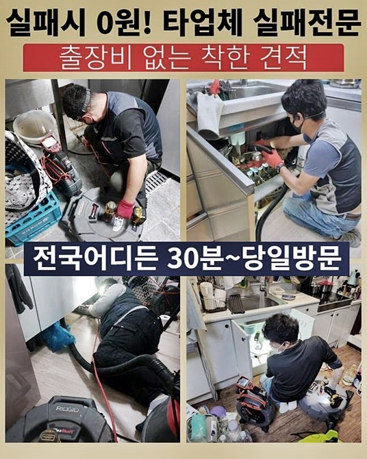
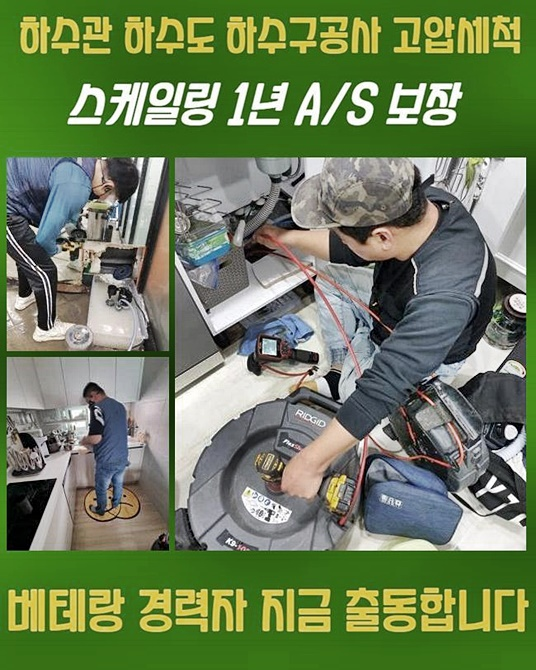
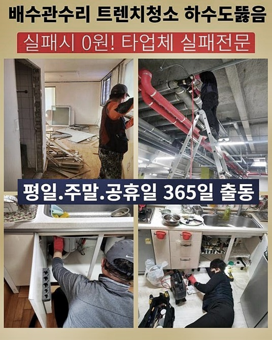
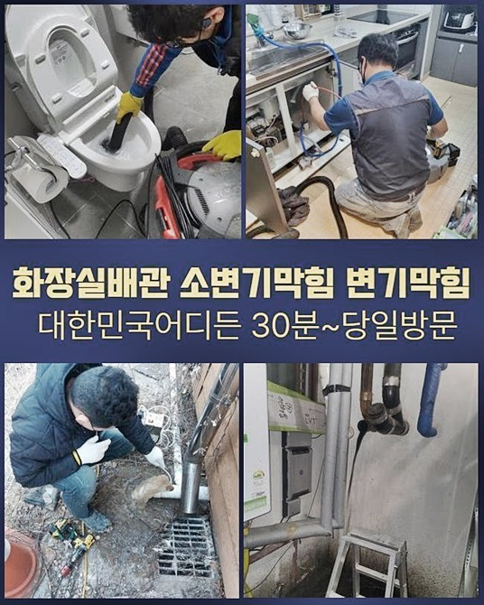
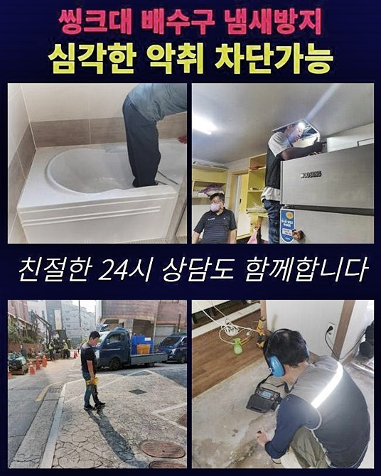

🏠 성동구 도선동화장실하수구뚫음 용답동 하수구뚫어주는곳 통수전문
용인 하수구막힘 전문 시공 후기

📋 작업 개요
- 위치: 용인
- 서비스 유형: 하수구막힘, 배관막힘, 역류해결, 뚫는업체, 배관청소, 고압세척
- 작업 일시: 2024. 7. 19. 10:25
- 업체명: 하수구수사대 (010-5615-2118)
🔍 문제 상황
성동구 도선동화장실하수구뚫음 용답동 하수구뚫어주는곳 통수전문
하수파이프에 쌓여있는 기름찌꺼기로 인하여 배수문제들과 욕실배수관에서 오수들이 역류하게 되는 현상을 다루는 단계를 텍스트와 사진으로 보여드릴게요
오수배관 역행현상과 하수도관막힘은 통상시 크나큰 불편감을 느끼는 핵심 문제점 중 한가지입니다
부엌 싱크와 세면도기부터 화장실 안쪽까지 물이 흐를수있는 각 부분들에서 이러한 상황이 생길 우려가 있죠
대부분의 사람들이 웹상에서 검색을 하거나 친구들의 조언을 통해 저가의 도구들을 활용하여 이물질 처리나 화학물질을 투입해 여러 대책을 실행해보게됩니다
그런데 해당방식이 배수구 기능에 반대로 악영향을 유발할 수 있다는 상황을 명심해야 할 것입니다
실질적으로 전문 기구를 이용하는 전문인도 심한 하수배관 클리닝으로 배수구조에 손상들을 입히게되는 상황들이 있어요
근간에 한 의뢰인이 이와 같은 클리닝을 혼자 시행한 후 결국에는 저희에게 지원을 의뢰했습니다
이런 사례를 통해 하수관 막힘 문제 수리를 위해 고급 기술과 독창적인 수리방법이 요구됨을 깨닫게됩니다
배수관막힘 현장내에서 우리 전문팀이 화장실 오수관의 막힘현상을 해소하기 위하여 집결하였습니다
생활용수를 배수관으로 배출할 때 역류하여 올라오는 불순물이 드러났습니다

🔎 원인 분석
💡 전문가 진단: 정밀 진단 장비를 사용하여 슬러지의 고착 여부를 판명하고 타격/세척 작업을 실시했습니다.
이런 사태는 고형화된 지방덩어리와 많은 잔여물들이 파이프의 연결지점 또는 비정상적인 경사에 쌓이게 되어 생긴 것입니다
하지만 걱정하지 마세요 우리는 이와같은 상황의 배수시스템 문제들을 해결할 수 있는 최상급의 기구와 전문적인 지식들을 갖고 있어 고객님들의 고민을 풀어낼 수 있습니다
하수관 안쪽의 기름과 오염물을 없애고 나면 또 다시 역류되는 문제들은 생기지 않아 하수구 문제들을 원활하게 처리하게 됩니다
이런 배수구 문제들을 처리하기 위한 대응 방안들을 알려드리겠습니다
첫째로 고려할 방식은 스프링 청소장비를 사용하는 방식입니다
이물질로 꽉찬 배수구에 스프링 청소기를 넣어주고 전원을 켜서 하수구 안쪽의 기름때 덩어리를 분해한 후 수도를 틀어서 바깥쪽으로 빼냅니다
배수구 근처에 남겨진 약간의 이물질들을 제거하려면 흡입장치를 하수배관에 넣은 후 여러번 반복하여 세척해드렸습니다
다음 절차는 샤프트라는 전문장비를 쓰는 방법입니다
플렉스 샤프트장비는 유연한 성질을 가지고 있어 구불구불한 배수관 안쪽도 문제없이 도달하여 기름때 덩어리를 갈아내고 흡입기로 여러번 흡입하여 하수관 안쪽의 이물질을 깨끗하게 청소합니다
깨끗한 물을 흘려서 잔여 불순물들을 없앤뒤 배수관을 완벽하게 유지시킵니다
배수관 내부에 잔존해 있는 흙이나 작은돌 같은 찌꺼기들은 고압세정 과정을 통해 정리하여 제거 가능합니다
배수구안에 떨어뜨린 귀한 물건들이 발견되거나 오수관이 노후화되어 휘어지거나 파손된 때에는 배관설비를 수리해서 원래 모습으로 되돌려 놓을 수 있죠

🔧 작업 과정
배수구막힘 현상을 처리하려고 첫번째로는 막혀있는 곳을 검토하고 고성능의 흡입력을 가진 기구를 통해 배수구 안쪽의 기름때 또는 슬러지물질을 빨아들이는 방식으로 없앴습니다
석션도구는 비교적 작은 막힘 처리에 도움이되지만 단단하게 뭉친 장애물과 하수도 깊은 부분의 오염물들을 해결할때는 어려움이 있으므로 이럴때는 보완할 수 있는 기계를 이용하여야 합니다
한 건물 작업지에서는 막힘현상을 장기간 내버려두어 악화된 상황에 도달했고 석션처리를 통해 수리가 불가능한 상태였습니다
그렇기에 막혀있는 지점을 또 다시 검사한 다음 전문 샤프트기계로 처리하기로 결정하게 되었습니다
하수파이프막힘은 빌딩의 하수 처리체계에 큰 타격을 주는 현상으로 막힘 때문에 물이 되돌아 나오거나 심한 냄새가 발생되므로 청결하지 않습니다
문제현장내에서는 드릴 모양의 플렉스 샤프트기기를 이용하여 빠른 회전 속도의 기기가 배수관 내의 찌꺼기들을 분쇄하고 제거 과정들을 실시하였습니다
주택 하수배관막힘 처리는 쉬운 과정이 아니며 장애의 이유들을 면밀히 조사하여 주요한 배수관 막힘장애들을 개선하여야합니다
이를 간과하면 문제가 재발하여 배수장애나 역한냄새가 심해지게 됩니다
저희 업체는 여러종류의 고급장비를 구비한 전문 설비팀으로 노련한 정비사가 있어 고장을 완벽하게 수리할 수 있어요
하수관막힘과 배수배관 역류상황은 통상시에 드물게 일어나지만 배관라인 막힘을 미연에 방지하려면 이유를 알아내고 세심하게 이용하는 것이 필수적입니다
배수관 이외에도 하수가 통과하는 모든 부분은 계획적인 세척을 진행해 이슈가 일어나지 않게 점검하는 것이 바람직해요
문제 해결을 하려고 석션 장치와 샤프트장치를 이용해서 하수관 안쪽의 오염물을 세척한다음 관찰용 내시경장치를 사용하여 배수관 내부를 카메라로 체크하여 남은 이물질이 있는지 검토해봤습니다
가정내에서 생기는 하수도 막힘상황을 자신이 해결하려는 시도들은 충분히 공감합니다
그런데 수리를 하다가 뜻밖의 다른 이슈가 일어날 가능성들을 생각해볼때 전문업체에 서비스를 의뢰하는 방식이 더욱 확실한 해결잭이 됩니다
경미한 현상이라면 세정제나 장비를 사용해 혼자 해결할 수도 있죠
이런 경우에 신경써야할 사항은 막힘의 이유와 상태를 제대로 분석하고 구매한 약물이나 기기들을 적절히 다루는 것입니다
잘못 다루면 하수파이프나 배수관로에 피해들을 발생시키게 됩니다
만약 이런 시도들이 효과가 없더라도 염려하지 마세요
전문기술자는 이런문제 상황을 빠르고 효과적으로 해결할 수 있는 능력을 갖췄으며 그리하여 경비와 시간을 줄이게 되며 배수관의 막힘이나 균열로 일어나게 될 심각한 상황을 미리 막을 수 있어요


✅ 작업 완료
혼자 시도중에 배수관을 훼손할 상황을 고려하여 내시경기구로 확인을 실행하는게 바람직하다고 할 수 있습니다
불쾌한 냄새를 해결하기위해 성능이 뛰어난 하수구트랩을 장착했습니다
그리고 화장실에서 전문작업자가 수도꼭지를 열어 배수시스템들에 문제점은 없는지 체크하고 물이 문제없이 흘러가는 것을 관찰했습니다
화장실의 하수관 냄새처리 요금은 현장 조건과 장애 수준 또 냄새의 정도에 비례해 변동되기 때문에 저희전문가는 문제현장을 점검하고 비용을 정확하게 안내하고 있습니다
저희의 베테랑들은 작업현장 방문시 별도의 요금을 청구드리지 않아서 고객님께서 별도요금을 우려할 필요가 없어요



⚠️ 하수구 배관 막힘 예방 및 관리 가이드
- ✅ 머리카락, 비닐, 물티슈 등 물에 분해되지 않는 이물질은 하수구 유입을 절대 금지해 주세요.
- ✅ 하수구 거름망을 씌우고 모여진 이물질은 주기적으로 쓰레기통에 바로 비워주셔야 합니다.
- ✅ 배관 노후가 심할 경우 이물질이 더 쉽게 걸리므로 주기적인 배관 세척(고압세척 등)을 권장합니다.
- ✅ 작업 후 1년 이내 재발 시 하수구수사대에서 무상 A/S 보증 서비스를 제공합니다.
💡 핵심 정리
- 확실한 장비 작업(내시경 점검 및 샤프트 스케일링)으로 원인을 뿌리 뽑습니다.
- 작업 후 1년 이내에 동일한 부위 재발 시 100% 무상 A/S 서비스를 보장합니다.
- 서울 · 경기 · 인천 전 지역에 24시간 언제든 긴급 출동할 수 있도록 항시 대기 중입니다.
❓ 자주 묻는 질문 (FAQ)
🚨 용인 하수구막힘 문제로 고민이신가요?
정확한 원인 진단과 확실한 시공으로 재발 없는 해결을 약속드립니다.
24시간 긴급 출동 | 서울 · 경기 · 인천 전지역 | 1년 내 재발 시 무상 A/S